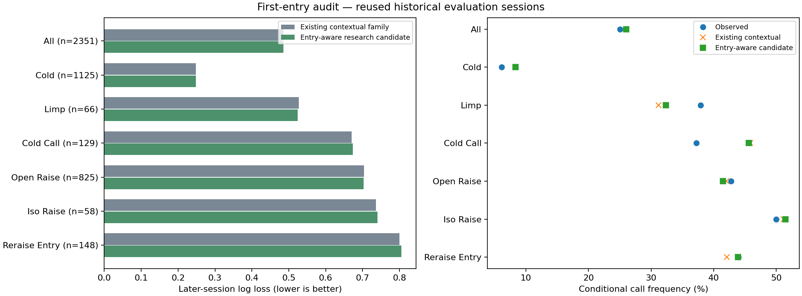
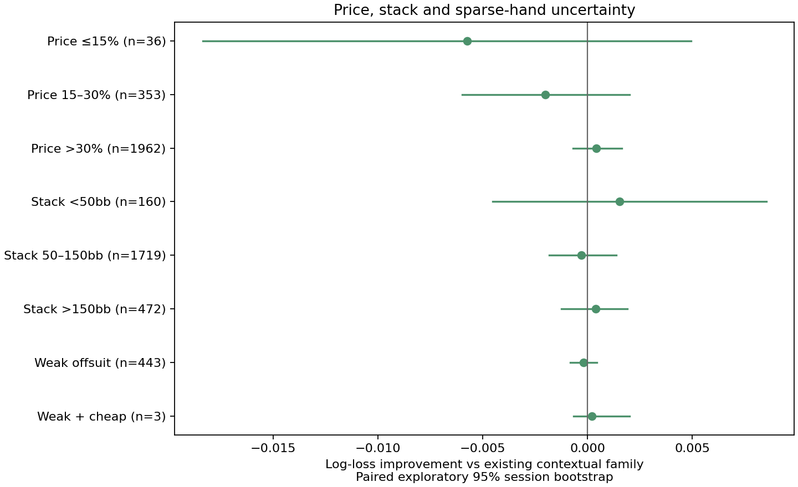
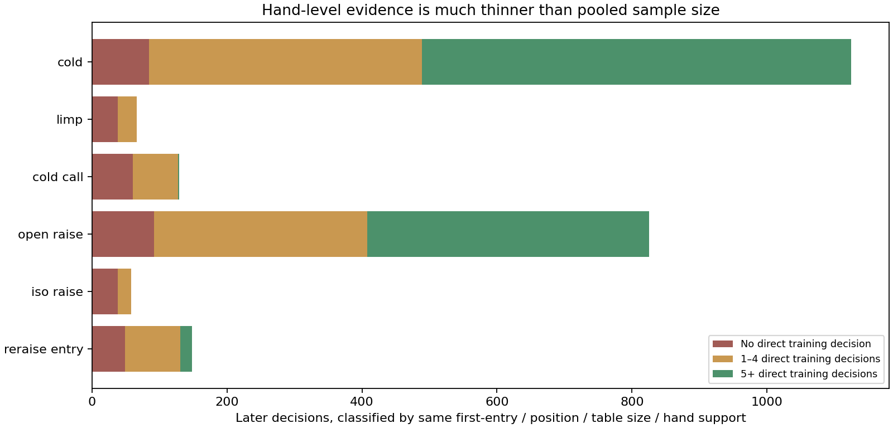

Retrospective development · 12,463 source decisions · 2,351 later decisions · production unchanged
Log loss: 0.485777 existing → 0.485807 candidate. The paired improvement interval spans zero. More detailed entry features did not establish a gain.
Cold-call entrants remain overcalled, while prior limpers are undercalled. A blanket reduction in calls would make one group worse.
Methods and recommendation · All subgroup results · Frozen protocol


All periods were previously inspected. No new independent holdout or individual-hand confidence is claimed. Only three weak-offsuit cheap-call decisions appear in the later sample.